Web Development
Aplikasi web menyeluruh: arsitektur, implementasi, integrasi, hingga deployment.
Portfolio · 2026
Saya Iqbal Akbar Ridha Febriansyah, programmer & web developer dari Bandung. Saya membangun platform belajar, layanan AI, dan aplikasi web dari rancangan arsitektur sampai deployment.
Lihat karyaSaya senang mempelajari hal baru, dan paling menikmati pekerjaan di titik temu antara desain, backend, dan orang yang memakainya.
Aplikasi web menyeluruh: arsitektur, implementasi, integrasi, hingga deployment.
Grafis dan antarmuka yang kreatif: banner, produk, sampai kebutuhan konten.
Dukungan teknis dan pemecahan masalah agar sistem tetap jalan dan pengguna puas.
Learning Management System · Dibangun oleh saya
Portal pembelajaran digital untuk pegawai PAM JAYA. Pegawai mengikuti pelatihan online dan mengakses materi untuk meningkatkan kompetensi, dari web maupun aplikasi Android dan iOS.
POST /analyze-frame
{
"faces_detected" : 1 ,
"violation" : true,
"violation_type" : "looking_away",
"confidence_score" : 97.4
}AI Service · Open source
Layanan pengawasan ujian online yang membaca frame webcam peserta dan menandai pelanggaran secara real-time. Disertai plugin Moodle Quiz Access (quizaccess_proctoring) agar langsung terpasang di LMS.
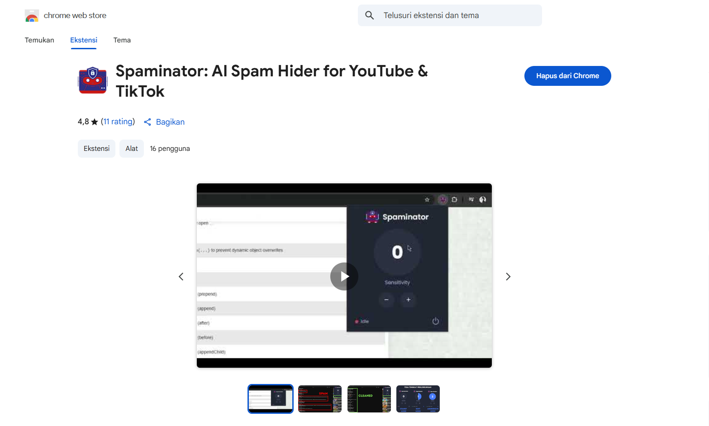
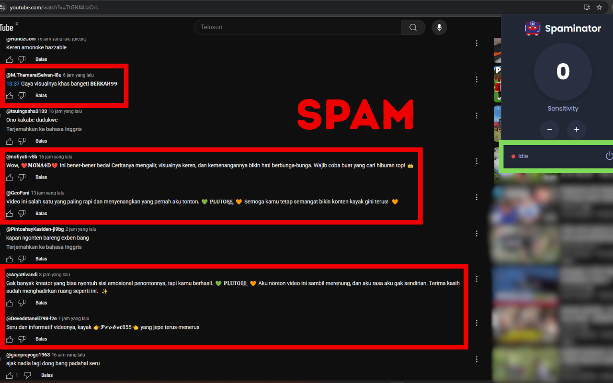
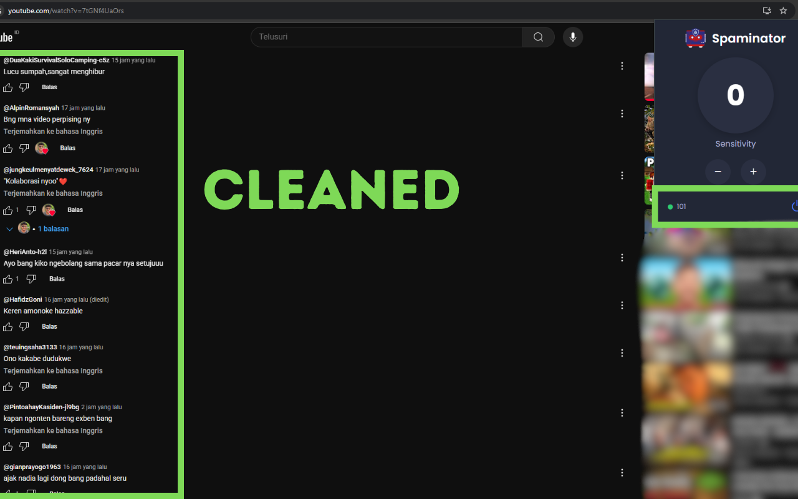
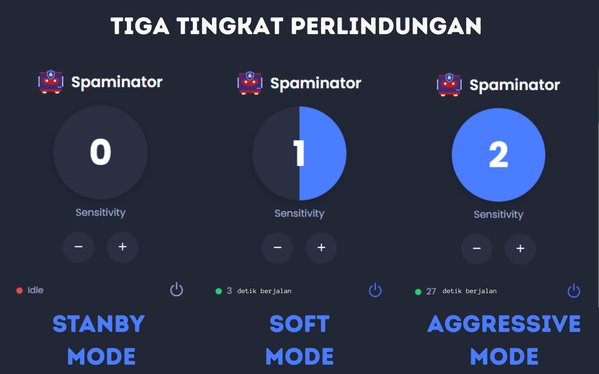
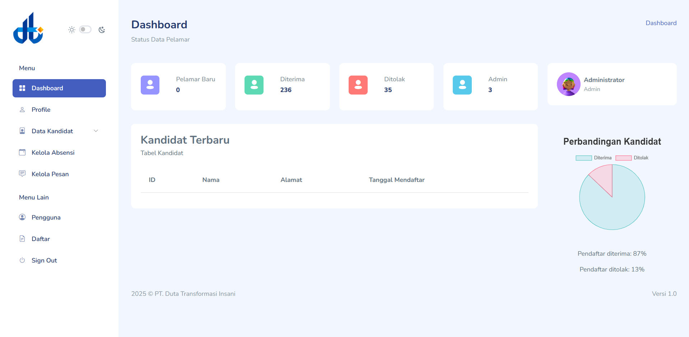
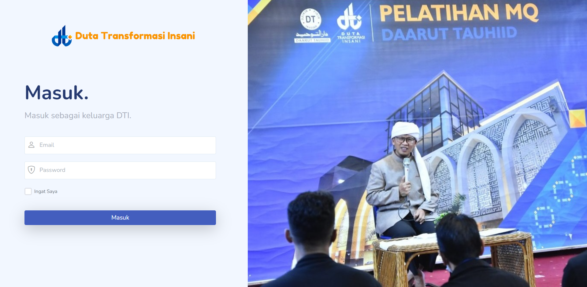
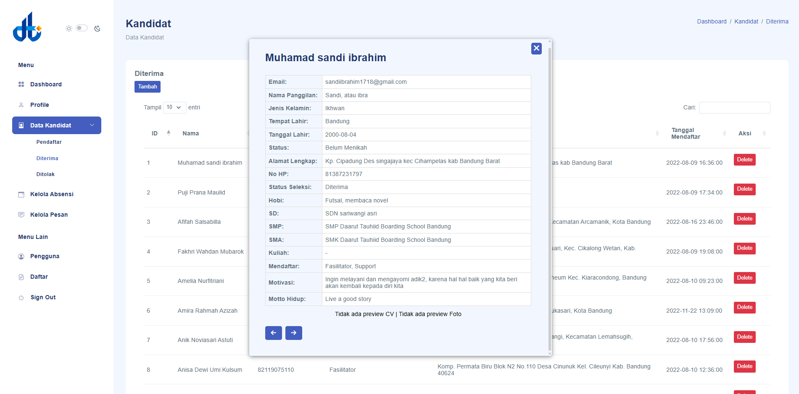
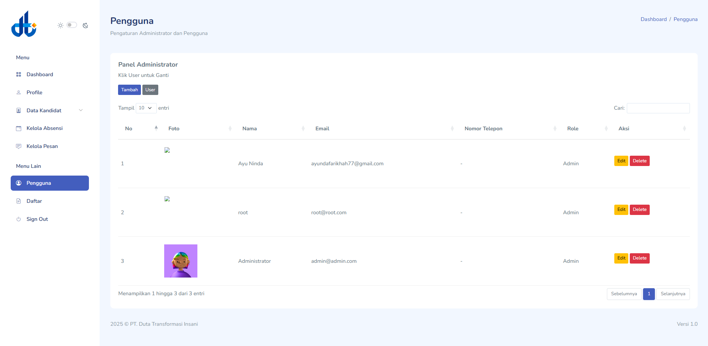
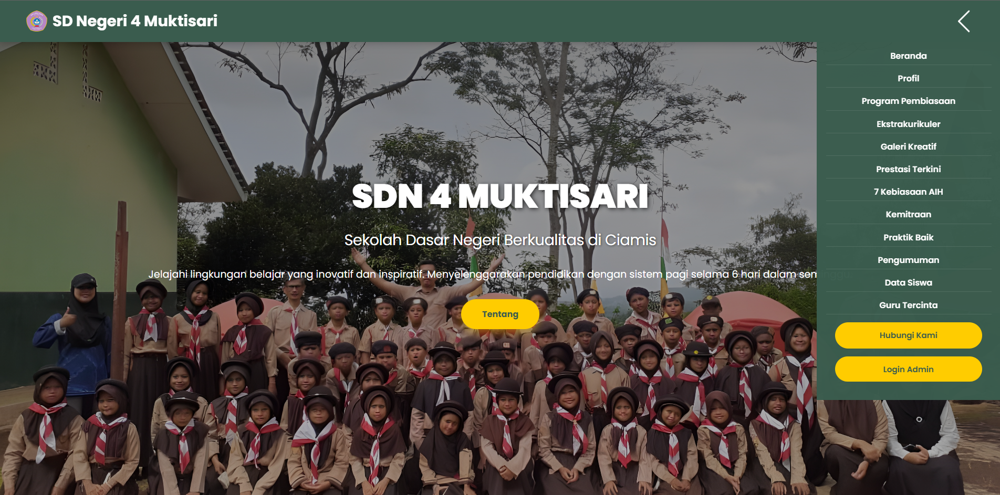
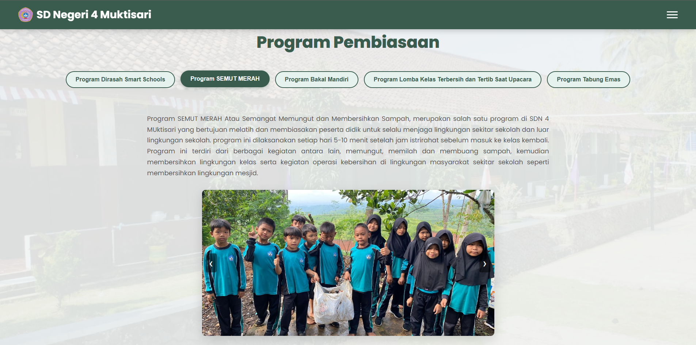
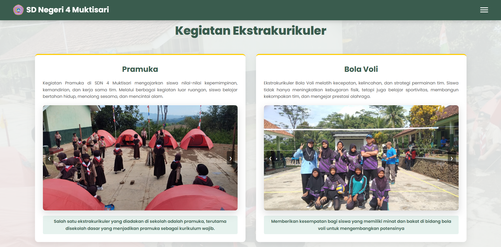
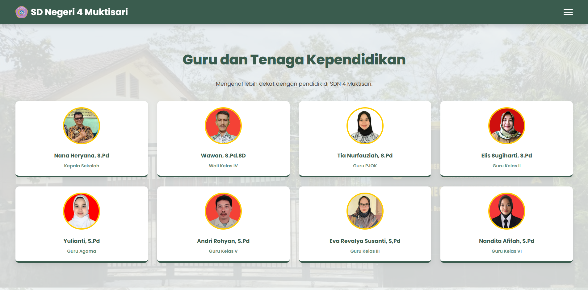
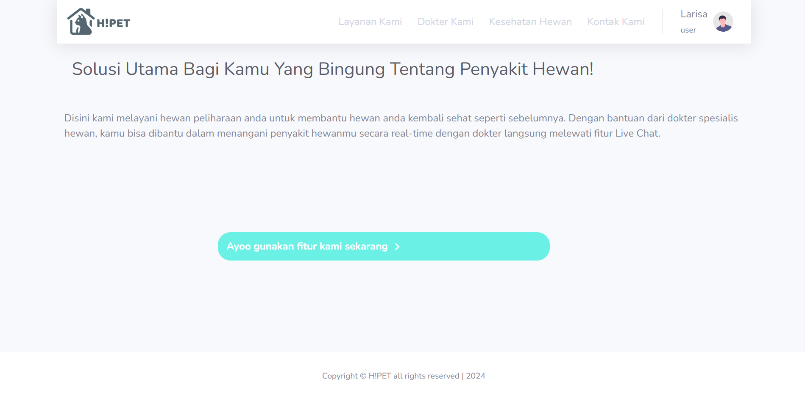
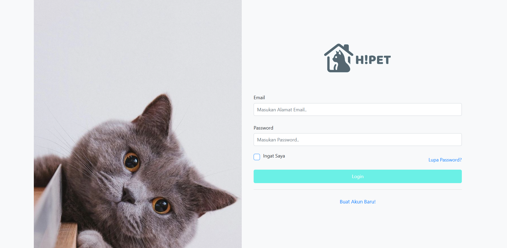
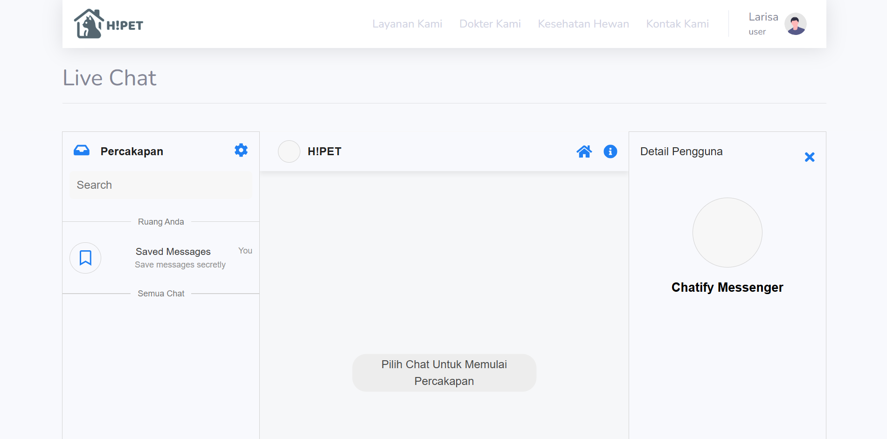
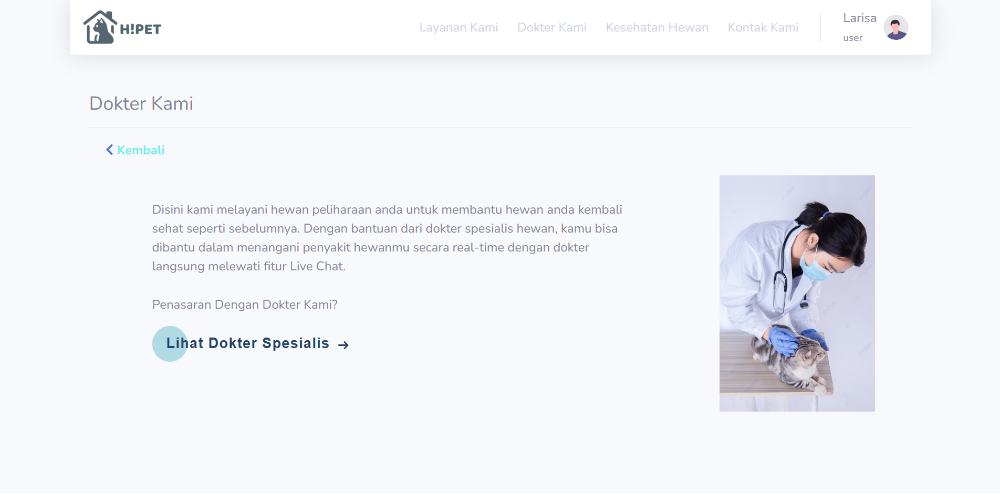
Punya ide atau proyek?